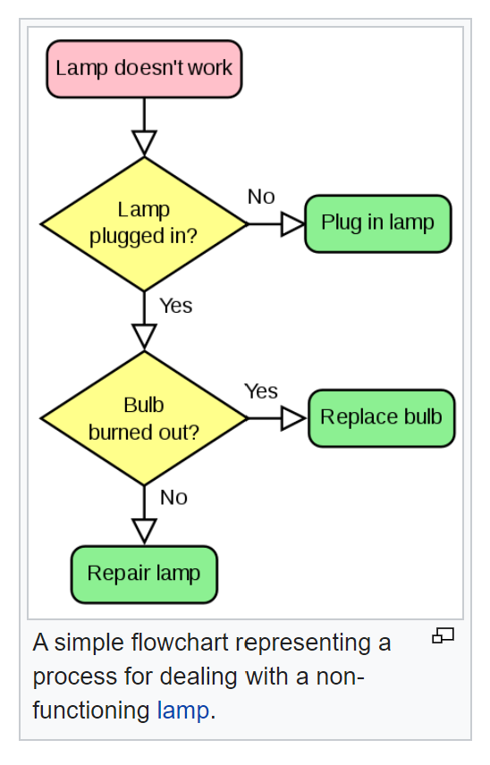
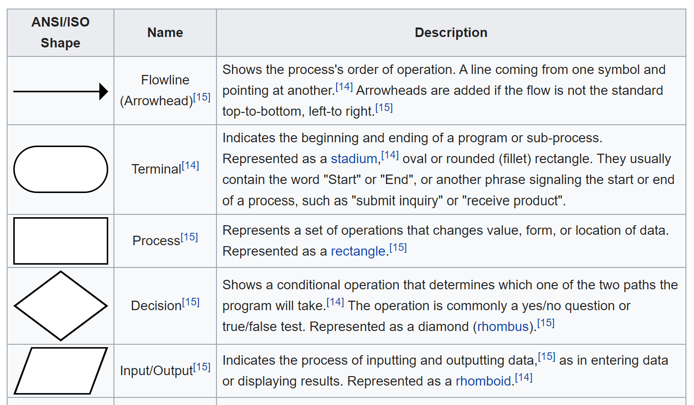

# Introducción a la
# programación con Python
.
## Módulo 3. Flujo de control
.
`© 2020 Pachi Sucunza, Belerofontech
`
# Índice
Visual Studio Code
Instalación
Condicionales
Anidación
Diagramas de flujo
Expresiones condicionales
Expresiones de asignación
Comentarios e indentación
Formateado (estilo) del código
Bucles
while
for
break, continue, else, pass
Palabras reservadas
Ejercicios extra
Referencias
# Visual Studio Code
Documentación oficial:
: https://code.visualstudio.com/docs
.
Guía recomendable (primeros pasos y "trucos")
: https://code.visualstudio.com/docs/getstarted/tips-and-tricks
.
Recomendable también: probar su "Interactive Playground"
tras instalarlo (sale en la pantalla "Welcome", abajo)
## Entornos alternativos tipo IDE (ya vistos!)
Entorno de pruebas Repl.it:
: https://repl.it/
Python 3.8, IDE sencillo, depurador, modo colaborativo...
Ver documento/presentación específica (...)
.
Google Colab (Jupyter Notebook) usado con Google Drive
: https://colab.research.google.com/notebooks/welcome.ipynb
.
Consola de Google Cloud (Debian 10, Python 3.7)
: https://console.cloud.google.com/
## Instalación
Descargar e instalar VS Code (mejor: System Installer)
: https://code.visualstudio.com/#alt-downloads
.
Imprescindible sólo un atajo de teclado: Ctrl+Shift+P
Atajos de teclado (cheat sheet):
: https://code.visualstudio.com/shortcuts/keyboard-shortcuts-windows.pdf
Instalamos también Veyon:
: https://veyon.io/
.
Segundo intento de instalar WSL sin permisos de admin?
: https://docs.microsoft.com/en-us/windows/wsl/install-manual#installing-your-distro
Formas alternativas de instalar, y soluciones a posibles problemas:
: https://docs.microsoft.com/en-us/windows/wsl/install-on-server
: https://docs.microsoft.com/en-us/windows/wsl/install-win10
: https://github.com/microsoft/WSL/issues/3817
## Configuración del entorno de VS Code
Recomendado: abrir una carpeta en blanco y crear algún fichero .py
Instalar extensión Python
*NO INSTALAR* el linter que nos ofrece
Instalar extensión Preview
: https://marketplace.visualstudio.com/items?itemName=searKing.preview-vscode
Instalar extensión Remote - WSL
: https://code.visualstudio.com/docs/remote/ssh
: https://marketplace.visualstudio.com/items?itemName=ms-vscode-remote.remote-wsl
Seleccionar *entorno Python 3.8*
Instalar paquetes Python matplotlib, pandas y numpy
py.exe -m pip install matplotlib pandas numpy
Instalar paquetes Python IPython, pip, wheel y setuptools (si no lo están ya)
Instalar paquetes Python black, pydocs, jupyter y requests
Opcional: instalar/desinst. paquete Python pyreadline si problemas con Tab
NOTA IMPORTANTE: ejecutar todos
los ejemplos de este módulo en un
IDE o en un notebook!
# Condicionales
Ejemplo:
if x < 0:
print('Negative changed to zero')
x = 0
.
Atención a la sintaxis: los dos puntos indican comienzo de
bloque (y es obligatorio que éste siempre esté indentado)
Otro ejemplo:
if x < 0:
print('Negative changed to zero')
x = 0
else:
x *= 2
.
Podemos verlo como una "bifurcación" en el camino
Un ejemplo más complejo:
if x < 0:
print('Negative changed to zero')
x = 0
else:
if x == 0:
print('Zero')
elif x == 1 or x < 2.0:
print('Single')
elif x == 1:
print('TEXT NEVER SHOWN')
else:
print('More')
Sólo se ejecuta una parte (eval. cortocirc. también aquí)
Nota: no existen los "switch" o "case" típicos en otros lenguajes
# Anidación
if ...:
x = i
if ...:
if i > 2:
x /= 2
elif i > 500:
print("too high")
zzz_only_here = True # 1ª aparición
x = 0
else:
x = a + b
print(x)
print(zzz_only_here) # error si i <= 500 !!
.
Recomendación: no abusar! (re-factorizar...)
De lo contrario el código se hace confuso de leer
Aparte de eso, cuidado con dónde definir variables!
# Ejercicio / demo: ecuación 2º grado
Hacer un programa sencillo que nos permita calcular
/NOBR/
las soluciones (una o dos) de una ecuación de 2º grado
/NOBR/
a ** x^2 + b ** x + c = 0
/NOBR/
tras pedir al usuario los valores de a, b y c (reales)
/NOBR/
Debe comprobar si las soluciones son valores reales,
/NOBR/
y en caso contrario mostrar un mensaje de error
.
Uso de variables y condicionales
"Pasos" o estructura lógica del programa
# Diagramas de flujo (flowcharts)
Primeros ejemplos (if, else, etc.):
How to Think Like a Computer Scientist: Learning with Python
Más detalles y explicación de los símbolos:
: https://en.wikipedia.org/wiki/Flowchart
 
# Expresiones condicionales
Recordar: se hacen con el (único) operador ternario
Son una expresión, no una sentencia condicional
y = x * 2 if x >= 0 else -x
# Se entiende la precedencia? Lo último era la asignacion!
.
print(s[0] if len(s) > 0 else " ")
# Como vimos, lo anterior equivale a:
print(len(s) > 0 and s[0] or " ")
.
Más detalles:
https://docs.python.org/3/reference/expressions.html
# Avanzado: expresiones de asignación (Python >= 3.8)
Operador :=
Doble papel: hace la asignación, y además devuelve el valor
Funciona sólo en la parte inicial de if, while, y algún sitio más
if s := pattern.search(data): # asigna a s el valor y comprueba si != ""
do_something(s)
.
No se recomienda abusar, sólo si son claras y sirven para que el código
resulte más breve/compacto. Si ayuda, usar paréntesis!
Casi siempre es mejor y más claro usar una asignación separada antes del if/while...
Más detalles:
: https://docs.python.org/3/reference/expressions.html#assignment-expressions
: https://www.python.org/dev/peps/pep-0572/
# Comentarios e indentación
Los comentarios simplemente se ignoran (suprimen), igual
que las líneas en blanco o con solo espacios/tabuladores
# This is a normal comment
y = 5 + x # This is a comment at the end of the line
.
Reglas de indentado. Ejemplos de errores:
# This is a normal comment
# This is an indented comment (valid)
if len(s) > 1: # error: first line indented
s = l[:i] + l[i+1:] # error: not indented
r = f(l[:i] + l[i+1:]) # error: unexpected indent
if i > 0:
s = "# This is a string, not a comment"
r.append(l[i:i+1] + x)
print(i) # error: inconsistent dedent
Más detalles:
: https://docs.python.org/3/reference/lexical_analysis.html#indentation
# Formateado (estilo) del código
Estilo recomendado: PEP 8. Resumen:
- Indentación con 4 espacios, no tabuladores
- Líneas de menos de 80 caracteres
- Espacios tras las comas y entre operadores
- No espacios tras/pre paréntesis (funciones, listas...)
- Comentarios preferiblemente en una línea separada
- Separar funciones, clases, y bloques grandes con líneas en blanco
- Nombres consistentes: variables_y_funciones, EjemploClases, CONSTANTES
Referencia: The Python Tutorial (docs.python.org)
Más detalles: PEP 8
## Saltos de línea y unión de líneas
Separación con punto y coma (no se recomienda, a veces confunde)
# The next line means print 3 lines or none!
if x < y < z: print(x); print(y); print(z)
Unión / continuación de líneas (explícita):
# The next line is explicitly joined to the following
if 1900 < year < 2100 and 1 <= month <= 12 \
and 1 <= day <= 31: # indent is ignored here
# It's a valid date
print("ok")
La unión *no sirve* dentro de comentarios, nombres, keywords, etc.
Más detalles:
: https://docs.python.org/3/reference/lexical_analysis.html#line-structure
## Saltos de línea y unión de líneas (cont.)
Unión / continuación de líneas (implícita):
made_up_names = ["Frunch", "Maart", "Andril", "Mei", "Luni",
# This comment inside the expression is valid
"Zebrech", "Trepf", "Krungt"]
Por eso es más limpio y claro esto que unir líneas:
if ( 1900 < year < 2100 and 1 <= month <= 12
and 1 <= day <= 31 ):
print("ok")
.
Es decir, si el contexto lo deja claro, podemos cortar las líneas "sin más"!
Más detalles:
: https://docs.python.org/3/reference/lexical_analysis.html#line-structure
# Bucles
Secuencia de instrucciones que se ejecutarán 0 o más veces
Es "necesario" asegurar que terminará en algún momento!
## while
Diagrama de flujo (notación "informal" pero sirve) y ejemplos:
https://www.tutorialspoint.com/python/...
Ejemplo (también en: collatz.py):
# Escribir la secuencia Collatz o "3n+1" hasta 1
n = int(input("Número para empezar? "))
while n != 1:
print(n, end=", ")
if n % 2 == 0: # par
n = n // 2
else:
n = n * 3 + 1
print(n, end=".\n")
.
Más información sobre la secuencia Collatz:
: https://es.wikipedia.org/wiki/Conjetura_de_Collatz
https://www.investigacionyciencia.es/noticias/...
# Ejercicio 1: media y suma #
Pedir una lista de números y calcular
/NOBR/
su media aritmética y su suma. Se deben
/NOBR/
aceptar números enteros, reales o mezcla.
/NOBR/
Pedir una secuencia de enteros hasta que
/NOBR/
se introduzca un valor vacío o el que se
/NOBR/
haya definido como especial (ej. "fin"),
/NOBR/
y entonces escribir los resultados.
@CLASS@ ejercicio-1
## Python Tutor
Herramienta muy útil, recomendada para los "inicios":
: https://www.pythontutor.com/
.
"Write Python code in your web browser,
and see it visualized step by step"
# Ejercicio 1 bis: cálculo de e #
Cálculo por aproximación (iterativo) del valor de la
/NOBR/
constante matemática e (o número irracional e)
/NOBR/
Se debe usar la fórmula: ex = ∑n=0 hasta ∞ x/(n!)
/NOBR/
. ... suponiendo x = 1 idealmente (más sencillo)
/NOBR/
Se deberá hacer un número de iteraciones "suficiente"
/NOBR/
para que el cálculo sea preciso (al menos 5 decimales)
/NOBR/
Nota: no permitido usar librerías (math, etc.)
Es decir, calcular: 1/0! + 1/1! + 1/2! + 1/3! + 1/4! + ...
.
Mejora opcional: número de iteraciones "exacto" para que
se cumpla una precisión determinada (fijada de inicio)
.
: https://en.wikipedia.org/wiki/E_(mathematical_constant)
@CLASS@ ejercicio-1-bis
# Ejercicio 2 (opcional): cambio de base #
Convertir un entero a una nueva base:
/NOBR/
Pedir un número a convertir y la base.
/NOBR/
Se debe escribir el número en la nueva.
/NOBR/
La base del número "original" es 10.
/NOBR/
Las bases nuevas válidas son de 2 a 9.
Hacerlo por parejas o grupos
Hacer primero el diagrama de flujo en papel (alto nivel)
Posible variante (opc.): bases 2 a 16 ("dígitos" a-f)
@CLASS@ ejercicio-2
# Ejercicio 3: polígonos y tortugas #
Dada una demo / base de un programa que dibuja en Python (con el
/NOBR/
módulo turtle) un cuadrado, modificarlo para que sea capaz de dibujar
/NOBR/
un polígono cualquiera, tras pedir al usuario el número de lados "n".
/NOBR/
Nota: da igual si no se dibuja centrado, mientras se vea entero.
Ejemplo de base en: turtle-square-exercise.py
Posible variante (opc.): dibujar estrellas de n puntas (n impar)
.
Doc. y más detalles, historia y curiosidades (lenguaje Logo)
: https://docs.python.org/3/library/turtle.html
: https://en.wikipedia.org/wiki/Turtle_graphics
: https://en.wikipedia.org/wiki/Logo_(programming_language)
.
@CLASS@ ejercicio-3
## for
Ejemplo:
for i in "hola", "que", "tal":
print(i)
.
Observar las dos palabras clave, for e in
Estructura "fija" y número de elementos conocido al inicio
Variable de bucle (en el ej.: "i"), y "cuerpo" (bloque indentado!)
Diagrama de flujo explicativo: Ver aquí
Variaciones:
for i in "hola que tal".split():
for i in (1, 2, 3):
for i in ["hola", "que", 2, 3]: # mix de tipos OK
for i in "aeiou": # qué hace éste?
...
.
También con listas, cadenas... Cualquier secuencia/colecc.!
Incluso con iteradores y generadores (los veremos más adelante)
Nota: es muy diferente a lo que permiten otros lenguajes!
Muy útil: range(), que veremos en detalle más adelante
range(5) # devuelve un rango [0, 5), o sea 0..4
for i in range(21):
print(i, "\t", 2 ** i)
.
. No es una lista o tupla pero se le parece...
r = range(5)
print(r) # qué ocurre?
print(list(r))
for vs while: iteración "definida" vs. "indefinida" (más general)
Cualquier iteración/bucle for puede transformarse a uno con while?
.
Recomendación: usar for siempre que sea posible, por legibilidad, y
usar while cuando la condición varía, o no se conoce de inicio
.
.
# Ejercicio 4: buscar repetidos #
Pedir una lista de palabras como una cadena (separadas por
/NOBR/
espacios solamente), y escribir las palabras que aparezcan
/NOBR/
repetidas. Asumir que todo está siempre en minúsculas.
/NOBR/
No importa si las repetidas se muestran varias veces...
.
Hacerlo por parejas o grupos
Nota: usar solamente cadenas (no listas, tuplas, etc.)
Pistas:
- x.find(y) devuelve >= 0 si se encuentra la subcadena y en x
- Opcional: usar str.split() para la separación de palabras
Si usamos split() interesa seguramente usar un bucle for
Más "a mano" puede ser con un while que vaya recorriendo
la cadena y guardando palabras ya visitadas...
@CLASS@ ejercicio-4
@ZOOM@ 125
@CLASS@ solution
## break en bucles for y while
Se utiliza para interrumpir el bucle más "cercano"
total = 0
while True:
n = input("Número siguiente (en blanco para acabar)? ")
if n.strip() == "": # nada o sólo espacios, \n, etc.
break
total += int(n)
# después del break, se continúa aquí
print("La suma total es: ", total)
.
Nota: en otros lenguajes además hay más tipos de bucles (ej. los que
comprueban la condic. al final), pero en Python se debe hacer siempre
lo equivalente a base de usar break
## continue en bucles for y while
Para continuar con la siguiente iteración del bucle más "cercano"
Ejemplo:
for num in range(2, 10):
if num % 2 == 0:
print("Found an even number", num)
continue
print("Found an odd number", num)
## else en bucles for y while
Se ejecuta al final, sólo si no se interrumpió con break
Ejemplo:
has_primes = False
for n in received_list_of_numbers:
if isprime(n):
has_primes = True
print("OK, hay al menos un número primo")
break
else:
# No se entra aquí si se salió con un break
print("La lista no contenía ningún número primo")
.
No confundir con el else de las sentencias if...
Ejemplos de break y else en bucles, y
diagramas de flujo para entenderlos:
: https://www.python-course.eu/python3_loops.php
## pass
Sentencia "nula". Usado cuando se necesite (poco habitual) no hacer nada
Ejemplo:
while True:
pass # Este bucle sólo se interrumpe desde teclado (Ctrl+C)
.
Puede servir en bucles, y también en sentencias if, etc. (cualquier "bloque")
.
Más detalles sobre else, break, continue y pass:
https://docs.python.org/3/tutorial/controlflow.html
# Palabras reservadas (keywords)
help('keywords') # Python 3.8
False await else import pass
None break except in raise
True class finally is return
and continue for lambda try
as def from nonlocal while
assert del global not with
async elif if or yield
: https://docs.python.org/3/reference/lexical_analysis.html#keywords
# Ejercicios extra
- Escribir un programa para dibujar una espiral (con turtle)
- Escribir un programa para saber si un número es primo
- Recomendado: The Python Challenge (desafío online):
www.pythonchallenge.com
Nota: antes, saber ver el "source code" en el navegador (...)
- En el libro "How to Think Like a Computer Scientist..." (conditionals: 2, 13)
- En el libro "How to Think Like a Computer Scientist..." (iteration: 1-10 sin funciones)
# Referencias
The Python Tutorial (docs.python.org), oficial (pero informal):
: https://docs.python.org/3/tutorial/controlflow.html
.
Un buen libro online gratuito para algunos temas (algo antiguo):
Por ejemplo condicionales, lógica, bucles, diagramas de flujo, y algunos ejercicios al final:
: https://openbookproject.net/thinkcs/python/english3e/conditionals.html#conditional-execution
: https://openbookproject.net/thinkcs/python/english3e/iteration.html
: https://openbookproject.net/thinkcs/python/english3e/conditionals.html